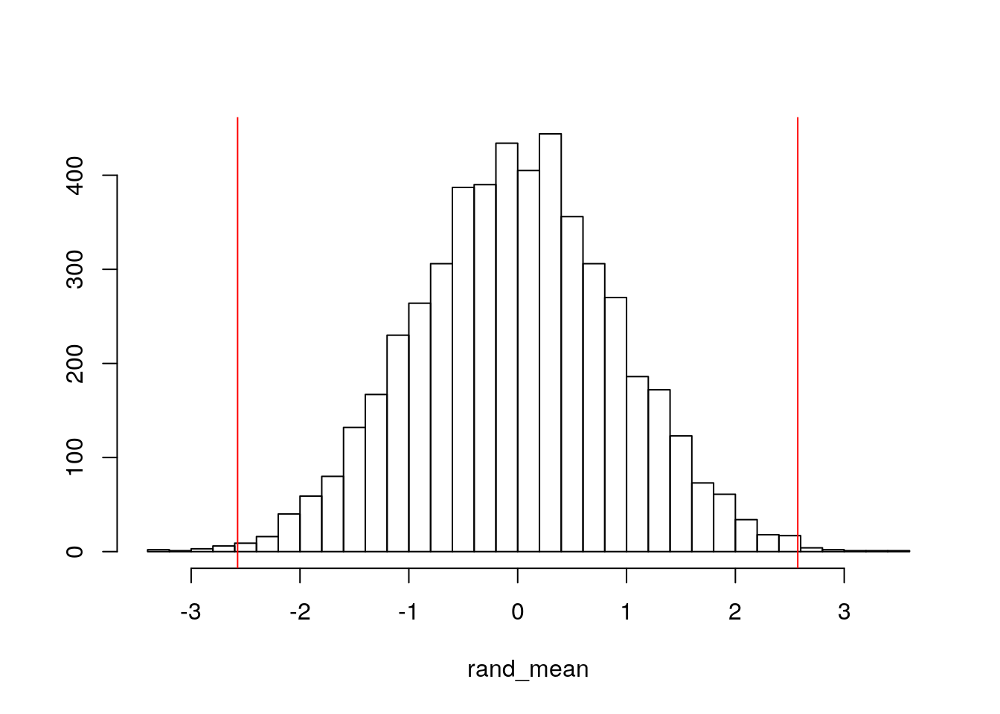
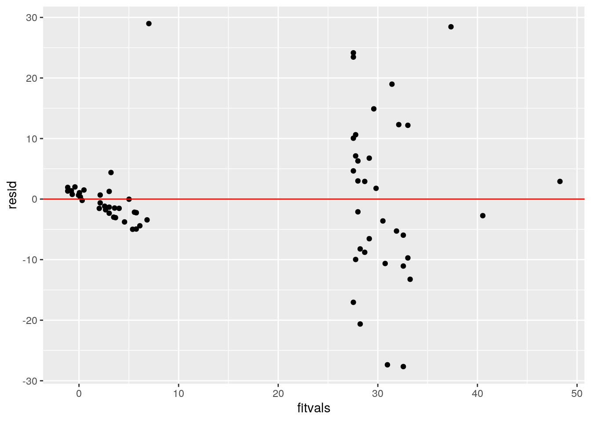
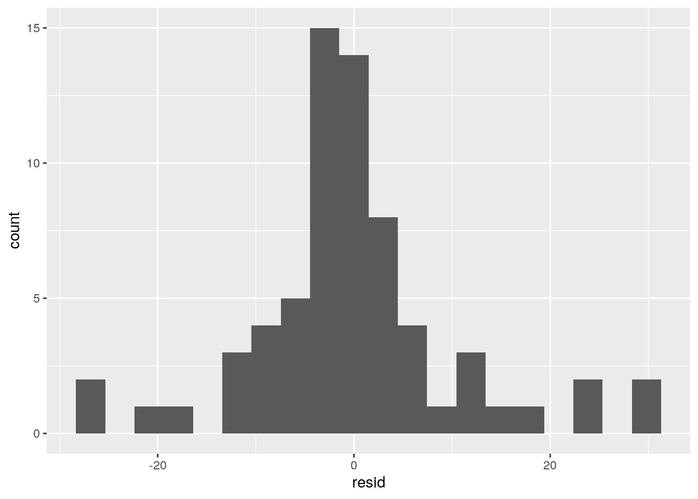

This is an R Markdown Notebook. When you execute code within the notebook, the results appear beneath the code.
Try executing this chunk by clicking the Run button within the chunk or by placing your cursor inside it and pressing Ctrl+Shift+Enter.
#0-SETTING UP DATA; COMBINING TWO DATASETS
#0-SETTING UP DATA; COMBINING TWO DATASETS
library(tidyverse)## ── Attaching packages ─────────────────────────────────────── tidyverse 1.3.0 ──## ✓ ggplot2 3.3.3 ✓ purrr 0.3.4
## ✓ tibble 3.0.4 ✓ dplyr 1.0.2
## ✓ tidyr 1.1.2 ✓ stringr 1.4.0
## ✓ readr 1.4.0 ✓ forcats 0.5.0## ── Conflicts ────────────────────────────────────────── tidyverse_conflicts() ──
## x dplyr::filter() masks stats::filter()
## x dplyr::lag() masks stats::lag()library(dplyr)
library(fivethirtyeight)## Some larger datasets need to be installed separately, like senators and
## house_district_forecast. To install these, we recommend you install the
## fivethirtyeightdata package by running:
## install.packages('fivethirtyeightdata', repos =
## 'https://fivethirtyeightdata.github.io/drat/', type = 'source')data(drinks)
data(cousin_marriage)
cousin_marriage## # A tibble: 70 x 2
## country percent
## <chr> <dbl>
## 1 Burkina Faso 65.8
## 2 Kuwait 51.7
## 3 Nigeria 51.2
## 4 Pakistan 51
## 5 Sudan 50.4
## 6 Kyrgyzstan 45.2
## 7 Qatar 44.5
## 8 Bahrain 44.4
## 9 Saudi Arabia 38.4
## 10 Tanzania 37.8
## # … with 60 more rowsdranks <- full_join(cousin_marriage, drinks, by="country")
dranks2 <- dranks %>% na.omit
dranks2 %>% mutate(total_serving_of_alcohol = beer_servings+wine_servings+spirit_servings)## # A tibble: 67 x 7
## country percent beer_servings spirit_servings wine_servings total_litres_of…
## <chr> <dbl> <int> <int> <int> <dbl>
## 1 Burkin… 65.8 25 7 7 4.3
## 2 Kuwait 51.7 0 0 0 0
## 3 Nigeria 51.2 42 5 2 9.1
## 4 Pakist… 51 0 0 0 0
## 5 Sudan 50.4 8 13 0 1.7
## 6 Kyrgyz… 45.2 31 97 6 2.4
## 7 Qatar 44.5 1 42 7 0.9
## 8 Bahrain 44.4 42 63 7 2
## 9 Saudi … 38.4 0 5 0 0.1
## 10 Tanzan… 37.8 36 6 1 5.7
## # … with 57 more rows, and 1 more variable: total_serving_of_alcohol <int>dranks3 <- dranks2 %>% mutate(total_serving_of_alcohol = beer_servings+wine_servings+spirit_servings)
dranks3 %>% summarize(median(total_serving_of_alcohol))## # A tibble: 1 x 1
## `median(total_serving_of_alcohol)`
## <int>
## 1 141dranks4<-dranks3 %>%mutate(total_serving_of_alcohol = ntile(total_serving_of_alcohol,n = 2), total_serving_of_alcohol=recode(total_serving_of_alcohol, "low", "high"))
dranks4## # A tibble: 67 x 7
## country percent beer_servings spirit_servings wine_servings total_litres_of…
## <chr> <dbl> <int> <int> <int> <dbl>
## 1 Burkin… 65.8 25 7 7 4.3
## 2 Kuwait 51.7 0 0 0 0
## 3 Nigeria 51.2 42 5 2 9.1
## 4 Pakist… 51 0 0 0 0
## 5 Sudan 50.4 8 13 0 1.7
## 6 Kyrgyz… 45.2 31 97 6 2.4
## 7 Qatar 44.5 1 42 7 0.9
## 8 Bahrain 44.4 42 63 7 2
## 9 Saudi … 38.4 0 5 0 0.1
## 10 Tanzan… 37.8 36 6 1 5.7
## # … with 57 more rows, and 1 more variable: total_serving_of_alcohol <chr>dranks5<-dranks4 %>%mutate(percent = ntile(percent,n = 2), percent=recode(percent, "low", "high"))
dranks5## # A tibble: 67 x 7
## country percent beer_servings spirit_servings wine_servings total_litres_of…
## <chr> <chr> <int> <int> <int> <dbl>
## 1 Burkin… high 25 7 7 4.3
## 2 Kuwait high 0 0 0 0
## 3 Nigeria high 42 5 2 9.1
## 4 Pakist… high 0 0 0 0
## 5 Sudan high 8 13 0 1.7
## 6 Kyrgyz… high 31 97 6 2.4
## 7 Qatar high 1 42 7 0.9
## 8 Bahrain high 42 63 7 2
## 9 Saudi … high 0 5 0 0.1
## 10 Tanzan… high 36 6 1 5.7
## # … with 57 more rows, and 1 more variable: total_serving_of_alcohol <chr>I am working with a dataset renamed as ‘dranks’, which is originally two data sets, ‘drinks’ and ‘cousin_marriage’, that I have combined together. The drinks data set contains information on the total servings of different alcohols and the total liters of pure alcohol consumed by different countries. All of these are numeric variables and are presented as ‘beer_servings’ which measures the average number of beer servings per person in each country, ‘wine_servings’ which measures the average number of wine servings per person in each country, ‘spirit_servings’ which measures the average number of spirit servings per person in each country, ‘total_liters_of_pure_alcohol’ which measures the average total liters of pure alcohol per person in each country. I have also created the a new categorical variable, with two categories (high and low), named ‘total_serving_of_alcohol’ which measures the total servings of alcohol per person in each country.The cousin_marriage data set contains information on the percentage of people in the country that engage in some form of cousin marriage. The percentage of cousin marriages per country is given by the numeric variable ‘percent’, which I have also converted to a categorical variable with two categories (high and low). These data sets were acquired from the ‘fivethirtyeight’ package. Overall, there is a total number of 67 observations for each variable.
#1-MANOVA, ANOVAs, POST-HOC T-TESTs
#1-MANOVA, ANOVAs, POST-HOC T-TESTs
man1<-manova(cbind(beer_servings, spirit_servings, wine_servings)~percent,dranks4)
summary(man1)## Df Pillai approx F num Df den Df Pr(>F)
## percent 1 0.56531 27.31 3 63 1.952e-11 ***
## Residuals 65
## ---
## Signif. codes: 0 '***' 0.001 '**' 0.01 '*' 0.05 '.' 0.1 ' ' 1summary.aov(man1)## Response beer_servings :
## Df Sum Sq Mean Sq F value Pr(>F)
## percent 1 368672 368672 66.629 1.501e-11 ***
## Residuals 65 359656 5533
## ---
## Signif. codes: 0 '***' 0.001 '**' 0.01 '*' 0.05 '.' 0.1 ' ' 1
##
## Response spirit_servings :
## Df Sum Sq Mean Sq F value Pr(>F)
## percent 1 69197 69197 26.986 2.21e-06 ***
## Residuals 65 166673 2564
## ---
## Signif. codes: 0 '***' 0.001 '**' 0.01 '*' 0.05 '.' 0.1 ' ' 1
##
## Response wine_servings :
## Df Sum Sq Mean Sq F value Pr(>F)
## percent 1 157689 157689 23.017 9.764e-06 ***
## Residuals 65 445314 6851
## ---
## Signif. codes: 0 '***' 0.001 '**' 0.01 '*' 0.05 '.' 0.1 ' ' 1pairwise.t.test(dranks5$beer_servings,dranks5$percent, p.adj="none")##
## Pairwise comparisons using t tests with pooled SD
##
## data: dranks5$beer_servings and dranks5$percent
##
## high
## low 3.1e-15
##
## P value adjustment method: nonepairwise.t.test(dranks5$spirit_servings,dranks5$percent, p.adj="none")##
## Pairwise comparisons using t tests with pooled SD
##
## data: dranks5$spirit_servings and dranks5$percent
##
## high
## low 6.3e-06
##
## P value adjustment method: nonepairwise.t.test(dranks5$wine_servings,dranks5$percent, p.adj="none")##
## Pairwise comparisons using t tests with pooled SD
##
## data: dranks5$wine_servings and dranks5$percent
##
## high
## low 1.5e-06
##
## P value adjustment method: nonetype1error<- 1-(0.95^7)
type1error ## [1] 0.3016627bonferroni <- 0.05/7
bonferroni ## [1] 0.007142857A total of 7 tests were carried out. Specifically, one MANOVA, three ANOVAs, and 3 post-hoc T-tests. The probability of at least one type error (if unadjusted) is 0.3016627. The bonferroni correction adjusted the significance level to 0.007142857. Despite this change all seven tests had p-values below this significance level still and therefore it can still be concluded that significant difference does exist. One of the many MANOVA assumptions is having random samples and independent observations, which is likely to have been met here. Additionally, another of the many MANOVA assumptions is to have Multivariate normality of DVs, and is likely to not have been met here.
#2-RANDOMIZATION TEST: MEAN DIFFERENCE
#2-RANDOMIZATION TEST: MEAN DIFFERENCE
dranks5 %>% na.omit## # A tibble: 67 x 7
## country percent beer_servings spirit_servings wine_servings total_litres_of…
## <chr> <chr> <int> <int> <int> <dbl>
## 1 Burkin… high 25 7 7 4.3
## 2 Kuwait high 0 0 0 0
## 3 Nigeria high 42 5 2 9.1
## 4 Pakist… high 0 0 0 0
## 5 Sudan high 8 13 0 1.7
## 6 Kyrgyz… high 31 97 6 2.4
## 7 Qatar high 1 42 7 0.9
## 8 Bahrain high 42 63 7 2
## 9 Saudi … high 0 5 0 0.1
## 10 Tanzan… high 36 6 1 5.7
## # … with 57 more rows, and 1 more variable: total_serving_of_alcohol <chr>set.seed(348)
rand_mean<-vector()
for(i in 1:5000){
new<-data.frame(litres=sample(dranks5$total_litres_of_pure_alcohol),incest=dranks5$percent)
rand_mean[i]<-mean(new[new$incest=="high",]$litres)-mean(new[new$incest =="low",]$litres)}
mean(new[new$incest=="high",]$litres)-mean(new[new$incest=="low",]$litres)## [1] 2.573262hist(rand_mean,main="",ylab="", breaks =30); abline(v = c(-2.573262, 2.573262),col="red")
mean(abs(rand_mean)> 2.573262)## [1] 0.0044The null hypothesis is that the mean total litres of alcohol consumed by people in a country is the same for a country with high percentage of cousin marriage vs. for a country with low percentage of cousin marriage, while the alternative hypothesis is that the mean total litres of alcohol consumed by people in a country is different for a country with high percentage of cousin marriage vs. for a country with low percentage of cousin marriage. The results of the randomization test show that the resulting p-value is 0.0044, which is below the significance level of 0.05. Therefore the null hypothesis can be rejected and it can be concluded that the alternative hypothesis is accepted.
#3-LINEAR REGRESSION MODEL WITH INTERACTION
#3 - HW#7-2.1
library(lmtest)## Loading required package: zoo##
## Attaching package: 'zoo'## The following objects are masked from 'package:base':
##
## as.Date, as.Date.numericlibrary(sandwich)
dranks4## # A tibble: 67 x 7
## country percent beer_servings spirit_servings wine_servings total_litres_of…
## <chr> <dbl> <int> <int> <int> <dbl>
## 1 Burkin… 65.8 25 7 7 4.3
## 2 Kuwait 51.7 0 0 0 0
## 3 Nigeria 51.2 42 5 2 9.1
## 4 Pakist… 51 0 0 0 0
## 5 Sudan 50.4 8 13 0 1.7
## 6 Kyrgyz… 45.2 31 97 6 2.4
## 7 Qatar 44.5 1 42 7 0.9
## 8 Bahrain 44.4 42 63 7 2
## 9 Saudi … 38.4 0 5 0 0.1
## 10 Tanzan… 37.8 36 6 1 5.7
## # … with 57 more rows, and 1 more variable: total_serving_of_alcohol <chr>dranks4$total_litres_of_pure_alcohol_c <- dranks4$total_litres_of_pure_alcohol - mean(dranks4$total_litres_of_pure_alcohol, na.rm = T)
fit<-lm(percent~total_litres_of_pure_alcohol_c*total_serving_of_alcohol,data=dranks4)
summary(fit)##
## Call:
## lm(formula = percent ~ total_litres_of_pure_alcohol_c * total_serving_of_alcohol,
## data = dranks4)
##
## Residuals:
## Min 1Q Median 3Q Max
## -27.659 -4.090 -1.180 2.915 28.986
##
## Coefficients:
## Estimate Std. Error
## (Intercept) 5.5799 2.8289
## total_litres_of_pure_alcohol_c -0.9049 0.6936
## total_serving_of_alcohollow 31.9592 4.4934
## total_litres_of_pure_alcohol_c:total_serving_of_alcohollow 3.1839 1.2178
## t value Pr(>|t|)
## (Intercept) 1.972 0.0529 .
## total_litres_of_pure_alcohol_c -1.305 0.1968
## total_serving_of_alcohollow 7.112 1.27e-09 ***
## total_litres_of_pure_alcohol_c:total_serving_of_alcohollow 2.615 0.0112 *
## ---
## Signif. codes: 0 '***' 0.001 '**' 0.01 '*' 0.05 '.' 0.1 ' ' 1
##
## Residual standard error: 10.81 on 63 degrees of freedom
## Multiple R-squared: 0.654, Adjusted R-squared: 0.6375
## F-statistic: 39.69 on 3 and 63 DF, p-value: 1.581e-14coeftest(fit, vcov=vcovHC(fit))############################COEF issue when knitting ##
## t test of coefficients:
##
## Estimate Std. Error
## (Intercept) 5.57986 3.02883
## total_litres_of_pure_alcohol_c -0.90490 0.64902
## total_serving_of_alcohollow 31.95918 5.23758
## total_litres_of_pure_alcohol_c:total_serving_of_alcohollow 3.18395 1.28830
## t value Pr(>|t|)
## (Intercept) 1.8422 0.07015
## total_litres_of_pure_alcohol_c -1.3943 0.16814
## total_serving_of_alcohollow 6.1019 7.117e-08
## total_litres_of_pure_alcohol_c:total_serving_of_alcohollow 2.4714 0.01617
##
## (Intercept) .
## total_litres_of_pure_alcohol_c
## total_serving_of_alcohollow ***
## total_litres_of_pure_alcohol_c:total_serving_of_alcohollow *
## ---
## Signif. codes: 0 '***' 0.001 '**' 0.01 '*' 0.05 '.' 0.1 ' ' 1dranks4 %>% select(percent, total_litres_of_pure_alcohol_c, total_serving_of_alcohol) %>% na.omit %>% ggplot(aes(total_litres_of_pure_alcohol_c, percent, color=total_serving_of_alcohol)) +
geom_point()+geom_smooth(method="lm") + geom_vline(xintercept=mean(dranks4$total_litres_of_pure_alcohol_c,na.rm=T),lty=2)## `geom_smooth()` using formula 'y ~ x'summary(fit)$r.sq## [1] 0.6539997resid<-fit$residuals
fitvals<-fit$fitted.values
ggplot()+geom_point(aes(fitvals,resid))+geom_hline(yintercept=0, color='red')
ggplot()+geom_histogram(aes(resid), bins=20)
ggplot()+geom_qq(aes(sample=resid))+geom_qq_line(aes(sample=resid))The ‘intercept’ means that the Mean/predicted percent of cousin marriage for countries that consume high total servings of alcohol per person and with zero ‘total_litres_of_pure_alcohol_c’ per person consumed is 5.57986.’total_litres_of_pure_alcohol_c’ means that for every 1-unit increase in ‘total_litres_of_pure_alcohol_c’, predicted percentage of cousin marriage goes down 0.90490 for this group.’total_serving_of_alcohollow’ means that low total serving of alcohol countries with zero ‘total_litres_of_pure_alcohol_c’ per person have predicted percentage of cousin marriage that is 31.95918 greater than countries with high total serving of alcohol per person with zero percentage of cousin marriage.’total_litres_of_pure_alcohol_c:total_serving_of_alcohollow’ means that the slope of percentage of cousin marriage on ‘total_litres_of_pure_alcohol_c’ for countries with low total serving of alcohol per person is 3.18395 greater than for countries with high total serving of alcohol per person. The proportion of the variation in the outcome that the model explains is 0.6539997.The assumptions for normality and linearity are met, however homoskedasticity is not.Before the heteroskedasticity robust standard errors the p value for ‘total_litres_of_pure_alcohol_c’ (0.1968) was above the 0.05 threshold and therefore not statistically significant (accept the null hypothesis), and after the heteroskedasticity robust standard errors the p value (0.16814) was again above the 0.05 threshold and therefore not statistically significant (accept the null hypothesis). In other words there was no change in significance. Additionally, for ‘total_serving_of_alcohollow’ before the heteroskedasticity robust standard errors the p value for ‘total_serving_of_alcohollow’ (1.27e-09) was below the 0.05 threshold and therefore statistically significant (reject the null hypothesis), and after the heteroskedasticity robust standard errors the p value (7.117e-08) was again below the 0.05 threshold and therefore statistically significant (reject the null hypothesis). In other words there was no chnage in significance. The standard errors remained practically. Specifically, the original SEs were 2.8289, 0.6936, 4.4934, 1.2178 for the ‘intercept’, ‘total_litres_of_pure_alcohol_c’, ‘total_serving_of_alcohollow’, and ‘total_litres_of_pure_alcohol_c:total_serving_of_alcohollow’, relatively. The robust SEs were 3.02883, 0.64902, 5.23758, 1.28830 for the ‘intercept’, ‘total_litres_of_pure_alcohol_c’, ‘total_serving_of_alcohollow’, and ‘total_litres_of_pure_alcohol_c:total_serving_of_alcohollow’, relatively. From these results the standard errors changed from the original and robust SEs, but very little.
#4-BOOTSTRAPPING
#4-BOOTSTRAPPING
samp_distn <- replicate(5000, {
boot_dat<- dranks4[sample(nrow(dranks4), replace = TRUE),]
Reg1<- lm(fit, data=boot_dat)
coef(Reg1)
})
samp_distn %>% t %>% as.data.frame %>% summarize_all(sd)## (Intercept) total_litres_of_pure_alcohol_c total_serving_of_alcohollow
## 1 2.639237 0.571453 6.758927
## total_litres_of_pure_alcohol_c:total_serving_of_alcohollow
## 1 1.789869The SEs in this case were 2.692461, 0.5782093, 6.883675, 1.795046 for the intercept, total_litres_of_pure_alcohol_c, total_serving_of_alcohollow, and total_litres_of_pure_alcohol_c:total_serving_of_alcohollow, relatively. The original SEs were 2.8289, 0.6936, 4.4934, 1.2178 for the intercept, total_litres_of_pure_alcohol_c, total_serving_of_alcohollow, and total_litres_of_pure_alcohol_c:total_serving_of_alcohollow, relatively. The robust SEs were 3.02883, 0.64902, 5.23758, 1.28830 for the intercept, total_litres_of_pure_alcohol_c, total_serving_of_alcohollow, and total_litres_of_pure_alcohol_c:total_serving_of_alcohollow, relatively. From these results the standard errors changed from the original SEs, robust SEs, to these bootstrapped SEs but very little. There was no change in significance in total_litres_of_pure_alcohol_c (which was not statistically significant) before and after the heteroskedasticity robust standard errors, and there was no change in significance in total_serving_of_alcohollow (which was statistically significant) before and after the heteroskedasticity robust standard errors. Because the bootstrapped standard error for total_litres_of_pure_alcohol_c is less than both the original standard error and the robust standard error for total_litres_of_pure_alcohol_c it can be determined that the bootrapped p-value for total_litres_of_pure_alcohol_c is less than both the original p-value and robust p-value for total_litres_of_pure_alcohol_c. Additionally, because the bootstrapped standard error for total_serving_of_alcohollow is greater than both the original standard error and the robust standard error for total_serving_of_alcohollow it can be determined that the bootrapped p-value for total_serving_of_alcohollow is higher than both the original p-value and robust p-value for total_serving_of_alcohollow.
#5-LOGISTIC REGRESSION FROM TWO EXPLANATORY VARIABLES
#5
library(ggplot2)
library(plotROC)
dranks6<-dranks5%>%mutate(y=ifelse(percent=="high",1,0))
dranks6## # A tibble: 67 x 8
## country percent beer_servings spirit_servings wine_servings total_litres_of…
## <chr> <chr> <int> <int> <int> <dbl>
## 1 Burkin… high 25 7 7 4.3
## 2 Kuwait high 0 0 0 0
## 3 Nigeria high 42 5 2 9.1
## 4 Pakist… high 0 0 0 0
## 5 Sudan high 8 13 0 1.7
## 6 Kyrgyz… high 31 97 6 2.4
## 7 Qatar high 1 42 7 0.9
## 8 Bahrain high 42 63 7 2
## 9 Saudi … high 0 5 0 0.1
## 10 Tanzan… high 36 6 1 5.7
## # … with 57 more rows, and 2 more variables: total_serving_of_alcohol <chr>,
## # y <dbl>ogdranks<- glm(y~total_litres_of_pure_alcohol+wine_servings, data=dranks6, family= "binomial")
summary(ogdranks)##
## Call:
## glm(formula = y ~ total_litres_of_pure_alcohol + wine_servings,
## family = "binomial", data = dranks6)
##
## Deviance Residuals:
## Min 1Q Median 3Q Max
## -2.15611 -0.21534 -0.00441 0.56915 2.27453
##
## Coefficients:
## Estimate Std. Error z value Pr(>|z|)
## (Intercept) 2.38128 0.61938 3.845 0.000121 ***
## total_litres_of_pure_alcohol -0.53280 0.17019 -3.131 0.001745 **
## wine_servings -0.02064 0.02456 -0.840 0.400784
## ---
## Signif. codes: 0 '***' 0.001 '**' 0.01 '*' 0.05 '.' 0.1 ' ' 1
##
## (Dispersion parameter for binomial family taken to be 1)
##
## Null deviance: 92.867 on 66 degrees of freedom
## Residual deviance: 47.805 on 64 degrees of freedom
## AIC: 53.805
##
## Number of Fisher Scoring iterations: 8exp(coef(ogdranks))## (Intercept) total_litres_of_pure_alcohol
## 10.8187916 0.5869573
## wine_servings
## 0.9795759dranks6$probs2<-predict(ogdranks, type = "response")
ggplot(dranks6)+geom_roc(aes(d=y, m=probs2))calc_auc(ggplot(dranks6)+geom_roc(aes(d=y, m=probs2)))## PANEL group AUC
## 1 1 -1 0.9273619probs2.1<-predict(ogdranks,type="response")
table(predict=as.numeric(probs2.1>.5),truth=dranks6$y)%>%addmargins## truth
## predict 0 1 Sum
## 0 26 4 30
## 1 8 29 37
## Sum 34 33 67accuracy <- (26+29)/67
accuracy## [1] 0.8208955sensitivity <-29/33
sensitivity ## [1] 0.8787879specificity <-26/34
specificity## [1] 0.7647059precisison <- 29/37
precisison ## [1] 0.7837838dranks6$logit<-predict(ogdranks, type="link")
dranks6 %>% mutate(y=as.factor(y)) %>% ggplot()+geom_density(aes(logit, color=y, fill=y), alpha=.4)+geom_vline(xintercept = 0)+xlab("logit")The coefficients are ‘intercept’, ‘total_litres_of_pure_alcohol’, and ‘wine_servings’. The intercept value of 10.8187916 means that the odds of high cousin marriage are 10.8187916 when the ‘total_litres_of_pure_alcohol’ and ‘wine_servings’ consumed by a country is zero the predicted percentage of cousin marriage per country. The ‘total_litres_of_pure_alcohol’ value of 0.5869573 means that the odds of being high cousin marriage are 10.8187916 times 0.5869573 to the power of whatever ‘total_litres_of_pure_alcohol’ value (odds of high cousin marriage = 10.8187916 X 0.5869573^total_litres_of_pure_alcohol). The ‘wine_servings’ value of 0.9795759 means that the odds of being high cousin marriage are 10.8187916 times 0.9795759 to the power of whatever ‘wine_servings’ value (odds of high cousin marriage =10.8187916 X 0.9795759^wine_servings). If there are values for both ‘wine_servings’ and ‘total_litres_of_pure_alcohol’, then the odds of high cousin marriage is 10.8187916 times 0.9795759 to the power of whatever ‘wine_servings’ value times 0.5869573 to the power of whatever ‘total_litres_of_pure_alcohol’ value (odds of high cousin marriage = 10.8187916 X 0.5869573^total_litres_of_pure_alcohol X 0.9795759^wine_servings). The sensitivity is 0.8787879 , the specificity is 0.7647059, the precision is 0.7837838, the AUC is 0.9273619 , and the accuracy is 0.8208955. The AUC is 0.9273619, which is a high value for AUC. AUC is the the area under the ROC curve. This high AUC value means that the model is very good at distinguishing between countries of high and low cousin marriage percentages.
#6-LOGISTIC REGRESSION FROM ALL VARIABLES; CV-10 FOLD; LASSO; CV-10 FOLD ON LASSO VARIABLES
#6
class_diag <- function(probs,truth){
#CONFUSION MATRIX: CALCULATE ACCURACY, TPR, TNR, PPV
if(is.character(truth)==TRUE) truth<-as.factor(truth)
if(is.numeric(truth)==FALSE & is.logical(truth)==FALSE) truth<-as.numeric(truth)-1
tab<-table(factor(probs>.5,levels=c("FALSE","TRUE")),factor(truth, levels=c(0,1)))
acc=sum(diag(tab))/sum(tab)
sens=tab[2,2]/colSums(tab)[2]
spec=tab[1,1]/colSums(tab)[1]
ppv=tab[2,2]/rowSums(tab)[2]
#CALCULATE EXACT AUC
ord<-order(probs, decreasing=TRUE)
probs <- probs[ord]; truth <- truth[ord]
TPR=cumsum(truth)/max(1,sum(truth))
FPR=cumsum(!truth)/max(1,sum(!truth))
dup <-c(probs[-1]>=probs[-length(probs)], FALSE)
TPR <-c(0,TPR[!dup],1); FPR<-c(0,FPR[!dup],1)
n <- length(TPR)
auc <- sum( ((TPR[-1]+TPR[-n])/2) * (FPR[-1]-FPR[-n]))
data.frame(acc,sens,spec,ppv,auc)
}
###########################################################Logistic regression and in-sample classification diagnostics
dranks6<-dranks5%>%mutate(y=ifelse(percent=="high",1,0))
dranks7<-dranks6%>%dplyr::select(-country,-percent)
fit <- glm(y~(.), data=dranks7, family ="binomial")## Warning: glm.fit: fitted probabilities numerically 0 or 1 occurredfit##
## Call: glm(formula = y ~ (.), family = "binomial", data = dranks7)
##
## Coefficients:
## (Intercept) beer_servings
## 0.34086 -0.14454
## spirit_servings wine_servings
## -0.04774 -0.05577
## total_litres_of_pure_alcohol total_serving_of_alcohollow
## 3.58546 3.74647
##
## Degrees of Freedom: 66 Total (i.e. Null); 61 Residual
## Null Deviance: 92.87
## Residual Deviance: 16.15 AIC: 28.15probsX <- predict(fit, type ="response")
class_diag(probsX, dranks7$y)## acc sens spec ppv auc
## 1 0.9701493 1 0.9411765 0.9428571 0.9910873table(predict=as.numeric(probsX>.5), truth=dranks7$y) %>% addmargins## truth
## predict 0 1 Sum
## 0 32 0 32
## 1 2 33 35
## Sum 34 33 67accuracy <- (32+33)/67
accuracy## [1] 0.9701493sensitivity <-33/33
sensitivity ## [1] 1specificity <-32/34
specificity## [1] 0.9411765precisison <- 33/35
precisison ## [1] 0.9428571###########################################################10-fold CV
set.seed(1234)
k=10
F<-FALSE
data<- dranks7[sample(nrow(dranks7)),]
folds<- cut(seq(1:nrow(dranks7)), breaks=k, labels=F)
diags<-NULL
for(i in 1:k){
train<-data[folds!=i,]
test<-data[folds==i,]
truth<-test$y
fit<-glm(y~.,data=train, family ="binomial")
probs<-predict(fit,newdata=test,type="response")
diags<-rbind(diags,class_diag(probs,truth))
}## Warning: glm.fit: fitted probabilities numerically 0 or 1 occurred
## Warning: glm.fit: fitted probabilities numerically 0 or 1 occurred
## Warning: glm.fit: fitted probabilities numerically 0 or 1 occurred
## Warning: glm.fit: fitted probabilities numerically 0 or 1 occurred
## Warning: glm.fit: fitted probabilities numerically 0 or 1 occurred
## Warning: glm.fit: fitted probabilities numerically 0 or 1 occurred
## Warning: glm.fit: fitted probabilities numerically 0 or 1 occurreddiags %>% summarize_all(mean)## acc sens spec ppv auc
## 1 0.9 0.89 0.9 0.96 0.9333333summary(fit)##
## Call:
## glm(formula = y ~ ., family = "binomial", data = train)
##
## Deviance Residuals:
## Min 1Q Median 3Q Max
## -1.66714 -0.00007 0.00000 0.03524 1.37388
##
## Coefficients:
## Estimate Std. Error z value Pr(>|z|)
## (Intercept) 0.8668 21.5871 0.040 0.968
## beer_servings -0.2737 0.2636 -1.038 0.299
## spirit_servings -0.1224 0.2219 -0.551 0.581
## wine_servings -0.1000 0.1633 -0.613 0.540
## total_litres_of_pure_alcohol 7.1887 12.1908 0.590 0.555
## total_serving_of_alcohollow 7.2946 20.7379 0.352 0.725
##
## (Dispersion parameter for binomial family taken to be 1)
##
## Null deviance: 82.9108 on 59 degrees of freedom
## Residual deviance: 7.5342 on 54 degrees of freedom
## AIC: 19.534
##
## Number of Fisher Scoring iterations: 12########################################################################LASSO
library(glmnet)## Loading required package: Matrix##
## Attaching package: 'Matrix'## The following objects are masked from 'package:tidyr':
##
## expand, pack, unpack## Loaded glmnet 4.0-2set.seed(1234)
x<- model.matrix(y~.+-1, data=dranks7)
y<- as.matrix(dranks7$y)
cv<-cv.glmnet(x,y,family="binomial")
lasso<-glmnet(x,y,family="binomial",lambda=cv$lambda.1se)
coef(lasso)## 7 x 1 sparse Matrix of class "dgCMatrix"
## s0
## (Intercept) 1.779014e+00
## beer_servings -8.429880e-03
## spirit_servings .
## wine_servings .
## total_litres_of_pure_alcohol .
## total_serving_of_alcoholhigh -2.179692e+00
## total_serving_of_alcohollow 3.470806e-14######################################################################### 10-fold CV on lasso variables
set.seed(1234)
k=10
F<-FALSE
data <- dranks7 %>% sample_frac
folds <- ntile(1:nrow(data),n=10)
diags<-NULL
for(i in 1:k){
train <- data[folds!=i,]
test <- data[folds==i,]
truth <- test$y
fit<- glm(y~beer_servings+total_serving_of_alcohol,data=train, family="binomial")
probs <- predict(fit, newdata=test, type="response")
diags<-rbind(diags,class_diag(probs,truth))
}## Warning: glm.fit: fitted probabilities numerically 0 or 1 occurredsummarize_all(diags,mean)## acc sens spec ppv auc
## 1 0.9404762 0.98 0.8166667 0.9457143 0.9583333For the in sample classification diagnostics, the sensitivity is 1, the specificity is 0.9411765, the precision is 0.9428571, the AUC is 0.9910873, and the accuracy is 0.9701493.For the out of sample classification diagnostics, the sensitivity is 0.89, the specificity is 0.9, the precision is 0.96, the AUC is 0.9333333, and the accuracy is 0.9. This AUC value of 0.9333333 is smaller than the in-sample AUC of 0.9910873, but is still a high AUC. This high AUC means that this a good model that is very good at distinguishing between countries of high and low cousin marriage percentages. The variables that are retained are beer_servings and total_serving_of_alcohol. The AUC gathered from the 10 fold CV on the lasso selected variables is 0.9583333. In comparison to the in-sample AUC of 0.9910873 and the 10 fold CV (with the same model used for the in-sample AUC) AUC of 0.9333333, this model has an AUC that lies between the two but less than the in-sample AUC. The AUC is till high which again means that this a good model.